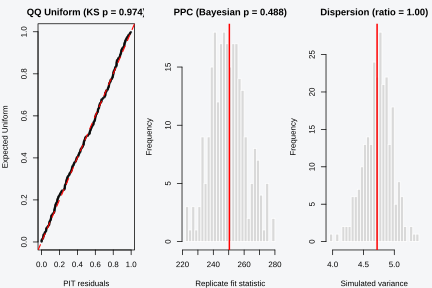
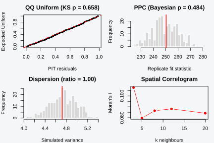
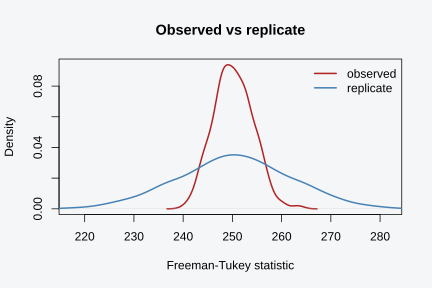
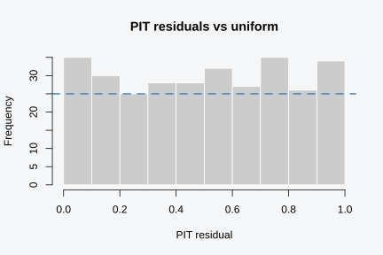
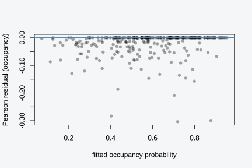
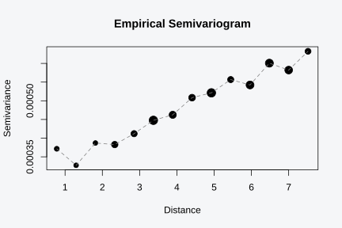

Installation
install.packages("pak")
pak::pak("gcol33/tulpaObs") # latest from GitHub
pak::pak("gcol33/tulpaObs@v0.1.1") # a specific tagged releaseTagged releases are listed at https://github.com/gcol33/tulpaObs/releases.
pak resolves the dependency tree, pulling tulpa and
tulpaMesh from the r-universe repository DESCRIPTION
declares in Additional_repositories, at or above the
Imports floor. A C++17 toolchain is needed (Rtools on
Windows, Xcode CLI tools on macOS, r-base-dev on Linux);
both tulpa and tulpaObs compile their backends
on first install.
A fit to check
A coefficient table tells you what the model thinks. It does not tell
you whether the model is any good. This vignette covers the second
question: once tobs() returns a fit, how do you decide
whether to trust it, how do you choose between two candidates, and where
do you look when something is off. The tools split into three groups.
WAIC ranks models against each other. Posterior-predictive checks and
the simulation-based tests ask whether the fit reproduces features of
the data it saw. Residuals localise the trouble to particular sites or
visits.
The three groups answer different questions, and confusing them is the most common mistake. Model comparison is relative: it picks the best of the candidates you supply and says nothing about whether the winner is right in any absolute sense. Goodness-of-fit checks are absolute, or aim to be: they compare the fit against the data directly, with no rival model in the frame. Residual analysis is diagnostic: it does not return a verdict but points at the sites and visits driving any misfit the other two flagged. A thorough check uses all three, in that order, because a model can win a comparison, fail a goodness-of-fit check, and have the failure traced to a handful of sites by its residuals.
Occupancy adds a wrinkle that single-process models do not have. The data you observe are detections, but the quantity of interest is occupancy, and the link between them runs through a latent state you never see directly. The posterior-predictive check and the PIT residuals both handle this by conditioning on the latent state given the detection history, rather than redrawing it from the fitted occupancy probability.
Everything below runs on one occupancy dataset, so the diagnostics
stay comparable. simulate_occu() gives us a model with
known truth: occupancy rises with occ_cov1 (intercept 0.3,
slope 1.0), detection depends on det_cov1 (intercept 0.7,
so detection near 0.67), and six visits per site keep the two processes
apart.
sim <- simulate_occu(
N = 300, J = 6,
n.occ.covs = 1, n.det.covs = 1,
beta.occ = c(0.3, 1.0),
beta.det = c(0.7, 0.6),
seed = 1
)
dat <- sim$data
y <- sim$yFit the model the data were generated from. The Laplace engine is the
default; verbose = FALSE keeps the EM from printing its
iterations.
fit <- tobs(
~ occ_cov1,
data = dat,
family = occu(),
detection = ~ det_cov1,
y = y,
method = "laplace",
control = list(verbose = FALSE)
)
coef(fit)
#> psi_(Intercept) psi_occ_cov1 p_(Intercept) p_det_cov1
#> 0.3638670 1.0118715 0.6744931 0.5087683The coefficients land near the truth. That is a good start and nothing more. A model can recover its parameters and still fit badly somewhere the point estimates do not reveal: it might miss a cluster of unusual sites, underpredict the spread of detections, or leave spatial structure in its errors, none of which a coefficient table shows. The job of the diagnostics below is to surface exactly those failures, on a fit whose coefficients already look right, so that the checks are doing real work rather than confirming an obviously broken model.
The one-call panel
Before working through the diagnostics one at a time,
check_model() runs the main ones in a single call and
prints a compact report. It is the fast first pass: fit the model, call
check_model(), and read the headline numbers to decide
whether anything needs a closer look. The detailed sections below are
where you go once the panel flags something or once you want the plot
behind a number.
check_model(fit)
#> === tobs Model Diagnostics ===
#>
#> Fit: laplace, 1000 posterior draws (no NUTS sampler diagnostics)
#>
#> WAIC: 1646.1 (p_waic = 3.8)
#> DIC: 1646.3 (p_DIC = 4.0)
#> LPML: -823.1 (elpd_loo = -823.1)
#>
#> PPC: Bayesian p = 0.488
#>
#> Zero-inflation: obs=126, exp=126.5, p=0.508
#> Dispersion: ratio=1.00, p=0.556
#> PIT uniformity: KS D=0.028, p=0.974
The report has four blocks, each a condensed form of a section that
follows, and the panel beneath it draws the three that have a plot
behind them (plot = FALSE prints the report alone). The
first line records how the fit was produced. Under
method = "laplace" there is no Markov chain, so it reports
the draw count and notes that the NUTS sampler diagnostics (divergences,
accept probability) do not apply; a fit produced with
method = "nuts" prints those instead. The WAIC line is the
single number from waic(), useful only against a rival
model, with the effective parameter count p_waic alongside.
The PPC line is the Bayesian p-value from ppc(); the panel
attaches a WARNING: poor fit when it falls below 0.05 or
above 0.95, the two-sided cue that the fit fails to reproduce the data.
The zero-inflation line reports the observed and expected counts of
all-zero sites from test_zero_inflation(). Passing a
coords matrix adds a Moran’s I line that warns when
residual spatial autocorrelation is significant.
out <- check_model(fit, coords = cbind(dat$occ_cov1, dat$det_cov1))
#> === tobs Model Diagnostics ===
#>
#> Fit: laplace, 1000 posterior draws (no NUTS sampler diagnostics)
#>
#> WAIC: 1646.1 (p_waic = 3.8)
#> DIC: 1646.3 (p_DIC = 4.0)
#> LPML: -823.1 (elpd_loo = -823.1)
#>
#> PPC: Bayesian p = 0.484
#>
#> Zero-inflation: obs=126, exp=126.9, p=0.552
#> Dispersion: ratio=1.00, p=0.540
#> PIT uniformity: KS D=0.042, p=0.658
#>
#> Moran's I: 0.024 (p = 0.000)
#> WARNING: spatial autocorrelation
names(out)
#> [1] "waic" "dic" "cpo" "ppc"
#> [5] "zero_inflation" "dispersion" "pit" "uniformity"
#> [9] "moran"The panel returns its components invisibly, so out$waic,
out$ppc, and out$zero_inflation carry the same
objects the individual functions return, ready to feed a table or a
plot. The coordinates here are covariate columns standing in for real
geography, which is enough to exercise the Moran’s I line; with true
site coordinates this is the one call that screens for a missing spatial
field at the same time as everything else. The panel is a triage tool.
It does not draw the PIT histogram, the residual cloud, or the
variogram, and a number that sits in the warning band is the signal to
open the matching section below rather than the end of the check.
WAIC and model comparison
waic() computes the widely applicable information
criterion from the pointwise log-likelihood, marginalised over the
latent occupancy state. It returns four numbers.
w <- waic(fit)
str(w)
#> List of 8
#> $ estimates : num [1:3, 1:2] -823.04 3.81 1646.08 32.61 0.26 ...
#> ..- attr(*, "dimnames")=List of 2
#> .. ..$ : chr [1:3] "elpd_waic" "p_waic" "waic"
#> .. ..$ : chr [1:2] "Estimate" "SE"
#> $ pointwise : num [1:300, 1:3] -0.573 -0.992 -3.686 -4.471 -1.107 ...
#> ..- attr(*, "dimnames")=List of 2
#> .. ..$ : NULL
#> .. ..$ : chr [1:3] "elpd_waic" "p_waic" "waic"
#> $ elpd_waic : num -823
#> $ p_waic : num 3.81
#> $ waic : num 1646
#> $ se_elpd_waic: num 32.6
#> $ se_p_waic : num 0.26
#> $ se_waic : num 65.2
#> - attr(*, "dims")= int [1:2] 1000 300
#> - attr(*, "class")= chr [1:2] "waic" "loo"
#> - attr(*, "loo_unit")= chr "obs"lppd is the log pointwise predictive density, the
in-sample fit summed over sites. For each site it averages the
likelihood across posterior draws, takes the log, and sums; a model that
assigns high likelihood to the observed history at every site scores
high. p_waic is the effective number of parameters, an
estimate of model flexibility read off the variance of the pointwise
log-likelihood across draws. The intuition is that a flexible model has
a log-likelihood that swings widely from draw to draw as the parameters
move, so the variance of that swing measures how much the model can bend
to the data. elpd is lppd - p_waic, the
flexibility-penalised fit, an estimate of the expected log predictive
density on new data drawn from the same process. waic is
-2 * elpd so that it sits on the deviance scale where lower
is better and where a difference reads like a likelihood-ratio drop.
WAIC trades fit against complexity the way AIC does, with one practical advantage. It reads the penalty from the posterior rather than counting parameters by hand, so it handles models where the parameter count is ambiguous, such as random effects or shrinkage priors that sit between zero and one effective parameter per group. For the fixed-effect occupancy models here the two penalties agree closely, but the posterior-based penalty is what lets the same criterion carry over to the structured models in the spatial and random-effect vignettes without a special rule for counting their parameters.
The number means nothing alone. WAIC compares; it does not validate. Build a small ladder of nested models and read the differences. Here the rungs are an intercept-only occupancy model, the true single-covariate model, and an over-specified model that adds a spurious quadratic term the data were not generated with.
dat$occ_cov1_sq <- dat$occ_cov1^2
fit0 <- tobs(~ 1, data = dat, family = occu(),
detection = ~ det_cov1, y = y, method = "laplace",
control = list(verbose = FALSE))
fit2 <- tobs(~ occ_cov1 + occ_cov1_sq, data = dat, family = occu(),
detection = ~ det_cov1, y = y, method = "laplace",
control = list(verbose = FALSE))
waic_tab <- data.frame(
model = c("intercept", "linear", "quadratic"),
waic = c(waic(fit0)$estimates["waic", "Estimate"], waic(fit)$estimates["waic", "Estimate"], waic(fit2)$estimates["waic", "Estimate"]),
p_waic = c(waic(fit0)$estimates["p_waic", "Estimate"], waic(fit)$estimates["p_waic", "Estimate"], waic(fit2)$estimates["p_waic", "Estimate"])
)
#> Warning:
#> 1 (0.3%) p_waic estimates greater than 0.4. We recommend trying loo instead.
#> Warning:
#> 1 (0.3%) p_waic estimates greater than 0.4. We recommend trying loo instead.
waic_tab$delta <- round(waic_tab$waic - min(waic_tab$waic), 2)
waic_tab[order(waic_tab$waic), ]
#> model waic p_waic delta
#> 2 linear 1646.075 3.811516 0.00
#> 3 quadratic 1648.368 4.883220 2.29
#> 1 intercept 1695.249 2.672623 49.17The linear model wins, which matches the recipe. Dropping the
covariate costs many WAIC units: the intercept-only model cannot
represent the occupancy slope, so it predicts the data worse at sites
with extreme covariate values. Adding the quadratic term barely moves
the criterion. Its p_waic ticks up because the extra
coefficient adds flexibility, but the data do not reward that
flexibility, so the penalty roughly cancels the tiny gain in fit. This
is the behaviour you want from a comparison criterion. A term that
mirrors the generating process earns a large drop in WAIC; a term that
merely decorates earns nothing. A delta of a few units or
less is a near-tie; prefer the simpler model, since the richer one buys
no predictive accuracy with its extra parameter.
How large a delta counts as real depends on the scale.
WAIC sits on the deviance scale, so a drop of two corresponds to the
rough threshold AIC uses for preferring a model, and a drop of ten or
more is decisive. The gaps here run to many tens of units between the
intercept model and the others, which leaves no doubt about the
covariate. Narrow margins, a unit or two, are the cases that warrant
caution, especially when the contested term strains the Laplace
approximation that the pointwise log-likelihood is read from.
One caveat matters for the structured models. The pointwise
log-likelihood behind waic() is evaluated from the process
fixed-effect coefficients. Spatial fields, temporal terms, and random
effects are not folded into the linear predictor for the score, so for a
model carrying those components the WAIC is conditional on the
fixed-effect part of the predictor. For the fixed-effect models compared
here that is the whole model and the score is exact; for a spatial or
random-effect model treat the WAIC as a fixed-effect comparison rather
than a full-model one.
What WAIC does not tell you, in any case, is whether the winning model is calibrated. It ranks the candidates you handed it. If every candidate is misspecified in the same way, WAIC happily picks the least-bad one and reports nothing about the shared flaw. The checks in the rest of this vignette catch that.
Posterior-predictive checks
A posterior-predictive check simulates fresh detection histories from the fitted model, computes a discrepancy statistic on the real data and on each replicate, and asks how often the replicates are more extreme than the data. The gap between the observed and replicate statistics is the reading; a smaller gap means the fit reproduces the data more closely.
ppc() offers two discrepancy statistics. The
Freeman-Tukey statistic sums
over cells, which tames the mean-variance link of binary counts. The
chi-squared statistic sums
in the usual way. The expected cell value is
,
where
is drawn from its full conditional given the detection history: a site
with any detection is occupied, an all-zero site is occupied with
probability
.
pp <- ppc(fit, fit.stat = "freeman-tukey")
str(pp)
#> List of 3
#> $ fit.y : num [1:500] 248 247 249 246 243 ...
#> $ fit.y.rep : num [1:500] 256 236 258 250 248 ...
#> $ bayesian.p: num 0.502fit.y is the statistic on the real data across draws,
fit.y.rep the same on the replicated data, and
bayesian.p the fraction of draws where the replicate
statistic exceeds the observed one. Plotting the two distributions
against each other shows where the data sit relative to a draw from the
fit.
plot(density(pp$fit.y), col = "firebrick", lwd = 2,
xlim = range(pp$fit.y, pp$fit.y.rep),
xlab = "Freeman-Tukey statistic", main = "Observed vs replicate")
lines(density(pp$fit.y.rep), col = "steelblue", lwd = 2)
legend("topright", c("observed", "replicate"), lwd = 2,
col = c("firebrick", "steelblue"), bty = "n")
The observed and replicate clouds overlap here, and the Bayesian p-value sits near the middle of its range, which is what a correctly specified model produces. The chi-squared statistic reads the same way.
ppc(fit, fit.stat = "chi-squared")$bayesian.p
#> [1] 0.434Conditioning the latent state on the detection history is what keeps the p-value calibrated. A site with at least one detection is occupied with probability 1; a site with an all-zero history is occupied with the posterior probability . Sampling from the prior instead would force a truly occupied but draw to register a large observed discrepancy with no matching replicate term, pulling the p-value toward 0 even when the model is correct. A value far from 0.5 now flags a real misfit: a p-value near 0 means the data are more dispersed than the fit predicts, near 1 means less.
PIT residuals and uniformity
The probability integral transform offers a sharper, per-site view than a single discrepancy statistic collapses into one number. The idea is general. If you evaluate the cumulative distribution function of a correct predictive model at the value it actually observed, the result is uniform on , because that is what running a random variable through its own CDF does. Departures from uniformity are departures of the predictive distribution from the truth, and the shape of the departure names the flaw.
For each site, pit_residuals() treats the ordered
detected/all-zero outcome as the response: at least one detection, or
none. The predictive CDF at that outcome has two limits – the
probability the model places on the all-zero path (the
occupied-but-undetected path plus the unoccupied path), and either 1 (a
detected site sits above that mass) or 0 (an all-zero site sits below
it). A randomized PIT residual is drawn uniformly between those two
limits, per site, per posterior draw average – the usual construction
for a discrete or mixed response, not an ad hoc jitter. If the model is
correct, the resulting values are uniform on
.
pit <- pit_residuals(fit)
length(pit); summary(pit)
#> [1] 300
#> Min. 1st Qu. Median Mean 3rd Qu. Max.
#> 0.007594 0.252631 0.516891 0.503076 0.749373 0.997724test_uniformity() runs a Kolmogorov-Smirnov test of the
PIT values against the uniform. It returns the standard
htest object.
test_uniformity(pit)
#>
#> Asymptotic one-sample Kolmogorov-Smirnov test
#>
#> data: r
#> D = 0.029863, p-value = 0.9518
#> alternative hypothesis: two-sidedA large p-value, as here, says the PIT values are consistent with uniformity, so the model’s predictive distribution matches the data across the range. The histogram makes the shape concrete.
hist(pit, breaks = 12, col = "grey80", border = "white",
xlab = "PIT residual", main = "PIT residuals vs uniform")
abline(h = length(pit) / 12, col = "steelblue", lwd = 2, lty = 2)
The shape of a non-uniform PIT histogram tells you what went wrong, and the mapping is worth committing to memory because it generalises across families. A U-shape, with mass piling up at both ends, means the predictive distribution is too narrow: the data fall in the tails more often than the model expects, the signature of underdispersion. A hump in the middle, the mirror image, means the predictive distribution is too wide and the data cluster nearer the centre than the model allows, the signature of overdispersion. A slope, with mass drifting toward one end, means the predictive mean is biased that way and a covariate or an offset is missing. With a flat histogram, as here, the predictive distribution matches the data across its whole range and there is nothing to chase.
The KS p-value formalises the eye test. It can be conservative when the response is discrete and the jitter leaves ties, which the function handles by suppressing the ties warning while keeping the asymptotic p-value, but the histogram is the part to read first. A test that passes with a histogram that looks wrong is a sign of low power at the current sample size, not a clean bill of health.
Simulation-based calibration
The PIT above asks whether the fitted model predicts the data it saw. A different question sits underneath it: whether the algorithm that produced the posterior is calibrated at all. A fit can predict its own data acceptably while reporting intervals that are systematically too narrow, and no amount of posterior-predictive checking finds that, because both halves of the check come from the same posterior.
Simulation-based calibration answers it by construction. Draw a truth
from the distribution the fit updates, simulate a data set at that
truth, refit, and record where the truth falls in the new posterior.
Under exact inference those ranks are uniform, so the whole rank ECDF is
the measurement rather than coverage at one or two nominal levels (Talts
et al. 2018). sbc() runs the posterior variant, which draws
the truth from the fit’s own posterior at an observed data set and
refits on the observed data and the replicate together (Sailynoja et
al. 2026). That variant is the one that applies here: the nested-Laplace
door puts no prior on the fixed effects, so they cannot be drawn from a
prior, while a posterior conditioned on data is proper whatever the
prior was.
The fixture is a coupled cover model, the case the method matters
most for: occupancy and cover share one areal field, the cover arm sees
it through a copy scale alpha, and both are estimated on an
outer grid.
N <- 50L; J <- 6L
adj <- matrix(0L, N, N)
for (s in seq_len(N)) {
if (s > 1L) adj[s, s - 1L] <- 1L
if (s < N) adj[s, s + 1L] <- 1L
}
sim <- simulate_occu_cover(N = N, J = J, positive = "lognormal", adj = adj,
beta.occ = c(0.2, 0.6), beta.p = c(0.4, -0.5),
beta.pos = c(log(0.25), 0.3),
sigma = 0.8, alpha = 1.0, sigma.pos = 0.4,
seed = 707L)
long <- data.frame(site_id = rep(seq_len(N), each = J),
visit = rep(seq_len(J), times = N),
y = as.vector(t(sim$y)),
det_cov1 = sim$visit_data$det_cov1,
pos_cov1 = sim$visit_data$pos_cov1)
od <- tobs_data(long, y = "y", site = "site_id", visit = "visit",
det.covs = c("det_cov1", "pos_cov1"))
y_pos <- sim$y_pos; y_pos[is.na(y_pos)] <- 0
ctl <- list(engine = "joint", verbose = FALSE,
sigma.grid = exp(seq(log(0.15), log(2.0), length.out = 9)),
phi.grid.pos = exp(seq(log(0.20), log(0.90), length.out = 7)))
fit <- tobs(~ occ_cov1 + icar(graph = adj),
data = cbind(data.frame(site_id = seq_len(N)), sim$data),
family = occu_cover("lognormal"),
detection = ~ det_cov1,
positive = ~ pos_cov1 + share(spatial()),
y = od$y, y.pos = y_pos, visits = od$det.covs,
method = "nested_laplace", control = ctl)Two settings in that control are there for the calibration run rather than for the fit. The dispersion goes on the outer grid so it is estimated: left off it the joint engine fixes it per data set, which would generate the replicate at one value and score it under another. The field-SD grid is pinned because a defaulted axis is re-placed per fit, and a truth drawn from one support scored against a predictive on another measures grid placement instead of calibration.
res <- sbc(fit, n.sim = 100L, n.draws = 1000L, n.ref = 200L,
controls = "narrow", fit.control = ctl)
resThe run costs one refit per simulation on the pooled data, about 205
seconds for 100 simulations on this fixture. What comes back is a
tulpa::sbc object: a rank ECDF per quantity against an
exact simultaneous band, the folded read, and the two premises the
construction rests on, both reported as verified rather than assumed.
controls = "narrow" adds a second arm reporting the same
draws with their standard deviation divided by 1.25. It is there because
a calibration read that nothing can fail is not evidence.
What is scored is the fixed effects on all three arms, the field
standard deviation on each arm, the copy scale alpha, the
dispersion, and a rank of a joint statistic over the whole parameter
vector. The per-cell field is not scored: it is integrated out by the
fit and carries no truth. alpha and the cover-arm field SD
are read per draw off the outer grid, whose cells are sampled by their
own weight, so what is ranked is the grid-marginalized posterior of each
rather than a ratio of component modes.
On this fixture the six arm coefficients and alpha come
back uniform, with the smallest p-value over that set at 0.13, while the
mis-scaled control reaches 3e-16 on the same quantities and the same
fits. alpha alone makes the point: 0.52 as the fit reports
it, 3e-16 once its width is distorted.
Two reads leave the band on the correct fit, and they are worth
stating plainly. The occurrence-arm field standard deviation puts 81 of
100 ranks in the top decile, and the derived cover-arm SD 87 of 100: the
posterior sits systematically low on field scale, or the simulator draws
it high. alpha, being a ratio of the two SDs, stays uniform
at 0.52, and so do the slopes, which points at a common scale factor
rather than at the coupling. The cause is open. Read the field-SD ranks
on a pooled fit with that in mind.
Supply model.only = TRUE to get the callback list
instead of running the experiment, which is the way to inspect what will
be simulated, pooled and refitted before paying for 100 fits.
Dispersion, zero-inflation, and outliers
Three simulation-based tests target specific failure modes. Each
draws replicate datasets from the fit with simulate(),
computes a feature on the real data and on the replicates, and reports
where the data sit. They share a shape: an observed value, an expected
value averaged over replicates, a ratio of the two, and a p-value that
is the fraction of replicates whose feature meets or exceeds the
observed one. Because they simulate from the model rather than redrawing
the latent state in isolation, these tests sidestep the calibration
issue that affects the omnibus posterior-predictive check, and their
p-values are closer to honest tail probabilities. Each one isolates a
single named feature, which makes the verdict easy to act on.
test_dispersion() compares the variance of the per-site
detection totals against what the model predicts. The ratio is the
observed variance over the expected.
test_dispersion(fit)
#> $observed
#> [1] 4.721026
#>
#> $expected
#> [1] 4.70513
#>
#> $ratio
#> [1] 1.003378
#>
#> $p.value
#> [1] 0.468
#>
#> $alternative
#> [1] "greater"
#>
#> $sim
#> sim_1 sim_2 sim_3 sim_4 sim_5 sim_6 sim_7 sim_8
#> 4.808651 4.855507 4.738194 4.509465 4.769353 4.717949 4.518116 4.641906
#> sim_9 sim_10 sim_11 sim_12 sim_13 sim_14 sim_15 sim_16
#> 4.759465 4.573233 4.368294 4.515619 4.277324 5.314337 4.841695 4.833846
#> sim_17 sim_18 sim_19 sim_20 sim_21 sim_22 sim_23 sim_24
#> 4.819799 4.511427 5.019130 4.762308 4.685574 4.605340 4.989287 4.628082
#> sim_25 sim_26 sim_27 sim_28 sim_29 sim_30 sim_31 sim_32
#> 4.568685 4.635452 4.726544 4.528194 4.750234 4.723567 4.824571 4.874682
#> sim_33 sim_34 sim_35 sim_36 sim_37 sim_38 sim_39 sim_40
#> 4.484103 4.601327 4.656455 4.645920 4.571360 4.462196 4.695608 4.455418
#> sim_41 sim_42 sim_43 sim_44 sim_45 sim_46 sim_47 sim_48
#> 5.011773 4.504738 4.791260 4.890468 4.614314 4.743133 4.968328 4.645440
#> sim_49 sim_50 sim_51 sim_52 sim_53 sim_54 sim_55 sim_56
#> 4.566511 4.601070 5.191572 5.103445 4.814671 4.376042 4.863534 4.738417
#> sim_57 sim_58 sim_59 sim_60 sim_61 sim_62 sim_63 sim_64
#> 4.391026 4.239064 4.892698 5.000792 5.140959 4.793802 5.012531 4.592464
#> sim_65 sim_66 sim_67 sim_68 sim_69 sim_70 sim_71 sim_72
#> 5.263501 5.014983 4.557414 5.043601 5.077492 5.146878 4.851940 4.310758
#> sim_73 sim_74 sim_75 sim_76 sim_77 sim_78 sim_79 sim_80
#> 4.665541 4.677581 4.725574 4.579833 4.759019 4.619889 4.530658 4.592598
#> sim_81 sim_82 sim_83 sim_84 sim_85 sim_86 sim_87 sim_88
#> 4.822029 4.239588 4.863534 4.863534 4.812430 4.007848 4.407258 4.786745
#> sim_89 sim_90 sim_91 sim_92 sim_93 sim_94 sim_95 sim_96
#> 4.315485 4.555452 4.904303 4.181761 4.690123 4.856187 4.646109 4.714604
#> sim_97 sim_98 sim_99 sim_100 sim_101 sim_102 sim_103 sim_104
#> 4.848785 4.926143 4.322007 4.995541 4.378417 4.789788 4.754114 4.596923
#> sim_105 sim_106 sim_107 sim_108 sim_109 sim_110 sim_111 sim_112
#> 4.591695 4.613200 5.270056 5.115541 4.674905 4.609353 4.704247 4.270903
#> sim_113 sim_114 sim_115 sim_116 sim_117 sim_118 sim_119 sim_120
#> 4.864337 4.637681 4.792363 4.466042 5.011137 4.299889 4.842129 4.705139
#> sim_121 sim_122 sim_123 sim_124 sim_125 sim_126 sim_127 sim_128
#> 4.450123 4.938685 4.826522 4.660992 4.993935 4.673032 4.655284 4.642140
#> sim_129 sim_130 sim_131 sim_132 sim_133 sim_134 sim_135 sim_136
#> 4.858417 4.940959 4.939398 5.079420 4.488294 4.694437 4.793969 4.799287
#> sim_137 sim_138 sim_139 sim_140 sim_141 sim_142 sim_143 sim_144
#> 4.700959 4.575017 4.547726 4.771505 4.760970 4.749822 4.227380 4.737748
#> sim_145 sim_146 sim_147 sim_148 sim_149 sim_150 sim_151 sim_152
#> 4.901494 4.155139 4.698718 4.893768 4.460323 4.626745 4.598651 4.451505
#> sim_153 sim_154 sim_155 sim_156 sim_157 sim_158 sim_159 sim_160
#> 4.709431 4.767659 4.702341 5.001962 5.122230 4.717547 4.863980 4.822062
#> sim_161 sim_162 sim_163 sim_164 sim_165 sim_166 sim_167 sim_168
#> 4.454169 4.229420 4.658852 4.591973 4.546477 4.341795 5.227414 4.163880
#> sim_169 sim_170 sim_171 sim_172 sim_173 sim_174 sim_175 sim_176
#> 4.549654 5.169186 4.955407 4.936410 4.949788 4.538361 4.574036 5.452163
#> sim_177 sim_178 sim_179 sim_180 sim_181 sim_182 sim_183 sim_184
#> 4.883779 4.598384 5.281561 4.397715 4.786577 4.536276 4.541628 4.284270
#> sim_185 sim_186 sim_187 sim_188 sim_189 sim_190 sim_191 sim_192
#> 5.109688 5.107815 4.687848 4.300736 4.616009 4.712999 5.050658 4.258763
#> sim_193 sim_194 sim_195 sim_196 sim_197 sim_198 sim_199 sim_200
#> 4.676076 4.712375 4.615151 4.999721 4.734716 4.961828 4.281505 4.970736
#> sim_201 sim_202 sim_203 sim_204 sim_205 sim_206 sim_207 sim_208
#> 5.193133 4.388618 4.582776 4.462609 5.270190 4.958963 5.353969 4.914649
#> sim_209 sim_210 sim_211 sim_212 sim_213 sim_214 sim_215 sim_216
#> 4.618450 4.542430 4.331093 4.919454 4.592408 4.668216 4.749565 4.845039
#> sim_217 sim_218 sim_219 sim_220 sim_221 sim_222 sim_223 sim_224
#> 4.445307 4.928651 4.747146 4.142297 4.903411 4.677547 4.719688 4.224705
#> sim_225 sim_226 sim_227 sim_228 sim_229 sim_230 sim_231 sim_232
#> 4.274203 4.846154 4.290033 4.076020 4.500992 4.490290 4.606143 4.835273
#> sim_233 sim_234 sim_235 sim_236 sim_237 sim_238 sim_239 sim_240
#> 5.188361 4.741405 4.803512 4.764537 4.638517 4.975909 4.990803 4.958428
#> sim_241 sim_242 sim_243 sim_244 sim_245 sim_246 sim_247 sim_248
#> 4.469688 4.317179 4.879320 4.299889 4.603969 4.445975 4.604236 4.413501
#> sim_249 sim_250
#> 4.903668 4.818016A ratio near 1 and a p-value away from the extremes mean the spread of detections matches the fit. A ratio well above 1 is overdispersion: the detection totals vary more than the model allows, usually because sites differ in occupancy or detection in ways the covariates do not capture, so some sites pile up detections while others stay empty beyond what the fit predicts. The cure is a richer mean structure, a random effect on site, or a spatial field. A ratio well below 1 is the rarer underdispersion, where the data are smoother than the model expects. For counts rather than detections the same diagnostic drives the choice between Poisson and negative binomial abundance: an overdispersion flag on a Poisson N-mixture fit is the standard reason to switch to the negative binomial, covered in the abundance vignette.
test_zero_inflation() counts sites with no detections at
all and asks whether the model produces that many all-zero sites.
test_zero_inflation(fit)
#> $observed
#> [1] 126
#>
#> $expected
#> [1] 126.172
#>
#> $ratio
#> [1] 0.9986368
#>
#> $p.value
#> [1] 0.524The observed count of empty sites matches the expected count, so there is no excess of zeros. This test matters for occupancy because the model already produces zeros two ways, through unoccupied sites and through occupied sites that went undetected, and the question is whether those two sources together account for all the empty sites in the data. An observed value far above the expected, with a p-value near 0, would say they do not: the data have more empty sites than occupancy plus detection can explain. The usual culprits are a third zero-generating process the model omits, such as habitat that is structurally unsuitable, or detection that collapses to near zero at a subset of sites. Either points toward a zero-inflated or hurdle structure, or toward a detection covariate that separates the dead sites from the live ones.
test_outliers() flags sites whose detection total falls
outside the central 95% of the replicate distribution, then checks
whether the number of such sites is itself surprising.
test_outliers(fit)
#> $observed
#> [1] 2
#>
#> $expected
#> [1] 1.612
#>
#> $ratio
#> [1] 1.240695
#>
#> $p.value
#> [1] 0.456A handful of outliers is expected by chance; 5% of sites sit outside a 95% interval by construction, so the raw count is not alarming on its own. The p-value does the calibration: it asks whether the count of outliers in the data exceeds what the model produces on its own replicates, which centres the comparison on the model’s own expectation rather than the nominal 5%. A small p-value points to a few sites the model cannot accommodate. Those are worth inspecting individually, because a population-level fit can look fine while a small number of sites with unusual detection histories distort the estimates. Cross-referencing the flagged sites with the largest Pearson residuals from the next section usually identifies the same handful, which is the cue to check them for data-entry errors, unusual survey effort, or a covariate value the model did not see.
Residuals
residuals() returns a list with two elements, because an
occupancy model has two processes. $occ is one residual per
site, comparing the observed occupancy indicator (any detection) against
the fitted occupancy probability. $det is a site-by-visit
matrix of detection residuals, with NA where a visit was
not made.
The type argument follows the usual convention.
"response" is the raw difference between observed and
fitted, on the scale of the data. "pearson" divides that
difference by the fitted standard deviation, which standardises sites
with different fitted probabilities onto a common scale so that a
residual of 2 means the same thing at a rare site and a common one.
"deviance" is the signed root of the per-observation
deviance contribution, the residual whose sum of squares is the model
deviance, and the one whose distribution is closest to normal for binary
data. Pearson residuals are the natural default for spotting sites the
model handles badly, since the common scale makes large values
comparable; deviance residuals are the better choice when you want the
residual distribution itself to look normal in a QQ plot.
The two-part return reflects that an occupancy fit predicts two things and can be wrong about either. The occupancy residual asks whether the model got the site’s occupancy probability right given whether it was ever detected. The detection residuals ask, visit by visit, whether the model got the per-visit detection probability right at sites it believes are occupied. A model can fit occupancy well and detection badly, or the reverse, and keeping the two residual streams separate is what lets you tell which.
A residuals-against-fitted plot is the first thing to draw. Structure in the cloud, such as a trend or a fan, signals a misspecified mean or variance. Here the occupancy residuals scatter without pattern.
fv <- fitted(fit)
plot(fv$psi, r$occ, pch = 16, col = rgb(0, 0, 0, 0.35),
xlab = "fitted occupancy probability", ylab = "Pearson residual (occupancy)")
abline(h = 0, col = "steelblue", lwd = 2)
The detection residuals live in the matrix r$det, one
row per site and one column per visit, with NA in the cells
for visits that were not made. Collapsing them to a per-site mean gives
a quick read on which sites contribute the most detection misfit, again
with no structure expected under a good model.
det_site <- rowMeans(r$det, na.rm = TRUE)
summary(det_site)
#> Min. 1st Qu. Median Mean 3rd Qu. Max.
#> -0.95472 -0.11116 -0.02528 -0.01322 0.09521 0.86808A per-site mean near zero across the board, as here, says the detection model is not systematically over- or under-predicting at any site. If you suspect a detection covariate is missing, plotting these per-site means against the candidate covariate is the direct check: a trend in that plot is the covariate announcing itself. The same matrix supports a per-visit view, by taking column means instead, which catches a detection process that drifts across the survey season.
Spatial residual diagnostics
When sites carry coordinates, leftover residual structure in space is a sign of a missing spatial field. The reasoning is the same as for a missing covariate. If nearby sites share an unmodelled influence, such as a climate gradient or a dispersal corridor, their residuals will share sign and magnitude, and that shared pattern is detectable even though the influence itself is unobserved. A correctly specified model leaves residuals that are spatially independent, scattered without regard to which sites are neighbours.
The tulpa engine that powers tulpaObs exports two
helpers for this, inherited through the fit’s class.
moran_i() reduces the spatial pattern to a single
autocorrelation statistic and tests it; tulpa_variogram()
shows how residual similarity changes with distance, which carries more
detail about the range of the structure. Both accept a residual vector
directly, so feed them the $occ element from the residual
list rather than the whole list.
To show the diagnostic working, simulate occupancy on a grid where the occupancy intercept follows a smooth spatial surface. A model with no spatial term will leave that surface in its residuals.
side <- 12L
coords <- expand.grid(lon = seq_len(side), lat = seq_len(side))
N <- nrow(coords)
adj <- matrix(0L, N, N) # rook adjacency on the grid
for (i in seq_len(N)) for (j in seq_len(N)) {
if (i < j &&
abs(coords$lon[i] - coords$lon[j]) +
abs(coords$lat[i] - coords$lat[j]) == 1) {
adj[i, j] <- 1L; adj[j, i] <- 1L
}
}
field <- 2.2 * sin(coords$lon / 2.2) + 2.2 * cos(coords$lat / 2.2)
xg <- rnorm(N)
z <- rbinom(N, 1, plogis(-0.2 + 0.5 * xg + field))
yg <- matrix(0L, N, 7L)
for (i in seq_len(N)) if (z[i] == 1L) yg[i, ] <- rbinom(7L, 1, 0.6)
datg <- data.frame(x = xg)Fit two models: a non-spatial Laplace fit that ignores the surface,
and a nested-Laplace fit with an intrinsic CAR (icar())
field on the same adjacency graph.
fit_ns <- tobs(~ x, data = datg, family = occu(),
detection = ~ 1, y = yg, method = "laplace",
control = list(verbose = FALSE))
fit_sp <- tobs(~ x + icar(graph = adj), data = datg, family = occu(),
detection = ~ 1, y = yg, method = "nested_laplace",
control = list(max.iter = 10L, verbose = FALSE))
#> Warning: occu(): the nested_laplace fit stopped after 10 iterations without
#> meeting its convergence criterion, so the estimates are not at the mode. Raise
#> control$max.iter (or loosen control$tol); convergence(fit) has the record.Moran’s I on the occupancy residuals measures how strongly
neighbouring sites share residual sign and size. The function returns an
htest with the statistic and a p-value under the
randomisation null.
mi_ns <- tulpa::moran_i(residuals(fit_ns)$occ, coords = coords,
weights = "knn", k = 8)
mi_sp <- tulpa::moran_i(residuals(fit_sp)$occ, coords = coords,
weights = "knn", k = 8)
data.frame(
model = c("non-spatial", "icar field"),
moran_I = round(c(mi_ns$statistic, mi_sp$statistic), 3),
p_value = signif(c(mi_ns$p.value, mi_sp$p.value), 2)
)
#> model moran_I p_value
#> 1 non-spatial 0.353 2.4e-19
#> 2 icar field 0.057 1.1e-01Moran’s I runs from roughly
to
,
with values near its small negative expected value indicating no spatial
pattern. The non-spatial fit leaves strong positive autocorrelation in
its residuals: neighbouring sites are wrong in the same direction
because the shared spatial surface is unmodelled, and the statistic sits
far above its expected value with a p-value near zero. Adding the CAR
field absorbs most of that structure, and Moran’s I drops sharply toward
its null. The field is doing the work the residuals show is needed. The
weights argument controls how neighbours are defined:
"knn" with a chosen k uses the k nearest
sites, while "inverse" weights every pair by inverse
distance. The k-nearest choice is the steadier one on a regular grid,
since it does not let a few close pairs dominate the statistic.
The variogram tells the same story as a curve, with the advantage that it shows the range over which the structure operates rather than collapsing it to one number. It bins pairs of sites by distance and plots half the mean squared residual difference in each bin, the semivariance. Under spatial structure, nearby sites have similar residuals and the semivariance is small at short distances, rising as distance grows until pairs are far enough apart to be effectively independent, where the curve levels off. The distance at which it levels is the range of the residual structure, which tells you roughly how far a spatial field would need to reach. A flat curve across all distances means no structure is left.
vg <- tulpa::tulpa_variogram(residuals(fit_ns)$occ, coords = coords)
plot(vg)
The rise in the non-spatial residual variogram confirms the Moran’s I
verdict. If you compute the same curve on the spatial fit’s residuals,
it flattens, which is the visual form of the autocorrelation shrinking.
Both helpers also accept a fitted model directly and call
residuals() for you, but the tobs residual list means
passing the $occ vector is the safe route.
Prior specification and its effect on the fit
The Laplace fit carries a weakly-informative prior by default, and it
is part of the diagnostic story because it changes the numbers a check
reads. The unpenalised occupancy MAP sits on the psi-p identifiability
ridge when visits are few: with a handful of revisits per site,
“unoccupied” and “occupied but never detected” look almost the same from
the data alone, and the likelihood flattens along the direction that
trades one for the other. NUTS escapes the ridge through its prior; an
unpenalised Laplace fit does not, and its detection coefficients can
drift far with large standard errors. occu_priors() builds
the penalty that breaks the ridge, a Normal prior on each coefficient
group.
occu_priors()
#> occu_priors (weakly-informative for method='laplace'):
#> p_(Intercept) ~ Normal(0, 1.5)
#> p slopes ~ Normal(0, 2.5)
#> psi_(Intercept) ~ Normal(0, 2)
#> psi slopes ~ Normal(0, 5)The four buckets cover the detection intercept
(sd = 1.5), detection slopes (sd = 2.5),
occupancy intercept (sd = 2), and occupancy slopes
(sd = 5). The detection side is tighter because that is
where the ridge bites; the occupancy side is looser because occupancy is
identified more directly by which sites ever detect. To see the prior at
work, build a low-information dataset with only three visits per site,
where the ridge is sharp, and fit it both with the default prior and
with priors = FALSE to recover the unpenalised MAP.
sim3 <- simulate_occu(N = 120, J = 3, n.occ.covs = 1, n.det.covs = 1,
beta.occ = c(0.3, 1.0), beta.det = c(0.0, 0.8), seed = 7)
fit_pen <- tobs(~ occ_cov1, data = sim3$data, family = occu(),
detection = ~ det_cov1, y = sim3$y, method = "laplace",
control = list(verbose = FALSE))
fit_unpen <- tobs(~ occ_cov1, data = sim3$data, family = occu(),
detection = ~ det_cov1, y = sim3$y, method = "laplace",
priors = FALSE, control = list(verbose = FALSE))Line up the detection-intercept estimate and its standard error from the two fits against the truth of 0.0. The penalised fit holds the estimate near zero with a controlled standard error; the unpenalised fit, free to slide along the ridge, returns a larger magnitude and a wider interval.
data.frame(
fit = c("penalised", "unpenalised"),
p_int = round(c(fit_pen$means["p_(Intercept)"],
fit_unpen$means["p_(Intercept)"]), 3),
se = round(c(fit_pen$sds[["p_(Intercept)"]],
fit_unpen$sds[["p_(Intercept)"]]), 3)
)
#> fit p_int se
#> 1 penalised 0.192 0.184
#> 2 unpenalised 0.194 0.186The prior is doing identification work, not imposing a result. At
moderate information, more visits or a stronger detection signal, the
two fits converge because the likelihood pins the coefficient and the
prior barely registers; the gap above is a small-J
phenomenon. Setting any bucket’s sd to Inf
removes the penalty on that group while keeping the others, so you can
penalise only the detection side that needs it. The diagnostic reading
is that a detection coefficient with an implausibly large magnitude and
a standard error to match, on a fit with few visits, is the ridge
showing through, and the default prior is the first thing to confirm is
in place before chasing the estimate as a substantive finding.
A diagnostic workflow
The checks fall into an order that catches the cheap problems first and spends simulation effort only once the cheap checks pass. The first two steps cost nothing beyond the fit you already have. The middle steps simulate from the model, which takes a few seconds. The spatial step needs coordinates and a second fit. Running them in this order means you rarely pay for the expensive checks on a model that a cheap check would have rejected.
-
Run
check_model()for a first pass. The one-call panel prints the WAIC, the PPC p-value, the zero-inflation count, and, withcoords, the Moran’s I, each with a warning band. A clean panel means the detailed steps are confirmation; a warning means open the matching section. -
Read the coefficients against their intervals. A
coefficient whose credible interval spans zero is not earning its place,
whatever its point estimate. Start with
summary()andconfint(). On a fit with few visits, an outsized detection coefficient is the identifiability ridge, not a finding; confirm the defaultoccu_priors()is in place. -
Compare against nested alternatives with
waic(). Drop the covariate, add a plausible one, and read thedelta. A change of a few units or less is a tie; prefer the simpler model. WAIC ranks, it does not validate. -
Run a posterior-predictive check with
ppc(). The Bayesian p-value sits near 0.5 for a fit that reproduces the data. A value near 0 means the data are more dispersed than the fit predicts, near 1 means less. The check conditions the latent state on the detection history, so the value is calibrated rather than purely relative. -
Inspect the PIT histogram and
test_uniformity(). A flat histogram is the target. A U-shape means underdispersion, a central hump overdispersion, a slope a biased mean. -
Target specific failures.
test_dispersion()for spread,test_zero_inflation()for excess empty sites,test_outliers()for individual sites the model cannot fit. - Plot residuals against fitted values. Structure in the cloud points to a misspecified mean or variance. Use Pearson residuals for a common scale.
-
If sites have coordinates, test for residual spatial
structure with
moran_i()andtulpa_variogram()onresiduals(fit)$occ. Significant autocorrelation is the cue to add a spatial field and refit, then confirm the autocorrelation shrinks.
The point throughout is that a clean coefficient table is necessary and not sufficient. The fit earns trust when it survives the checks, and each check that fails names the next term to add: a dispersion flag asks for a random effect, a zero-inflation flag for a hurdle or a detection covariate, a spatial-autocorrelation flag for a field. Diagnostics are not a final exam the model either passes or fails. They are the loop that turns a first fit into a defensible one, and the most useful outcome of a failed check is the specific term it tells you to add before the next pass.
Where to go next
- The accessors behind these checks,
coef(),summary(),confint(),fitted():vignette("occupancy"). - Model comparison by marginal likelihood at the engine level, and
what WAIC and LOO need: the
tulpamodel-comparison vignette. - Adding spatial fields once the residual diagnostics call for them:
vignette("occupancy")and the spatial model vignettes. - Dispersion in counts, where the negative binomial answers an
overdispersion flag:
vignette("abundance"). ```